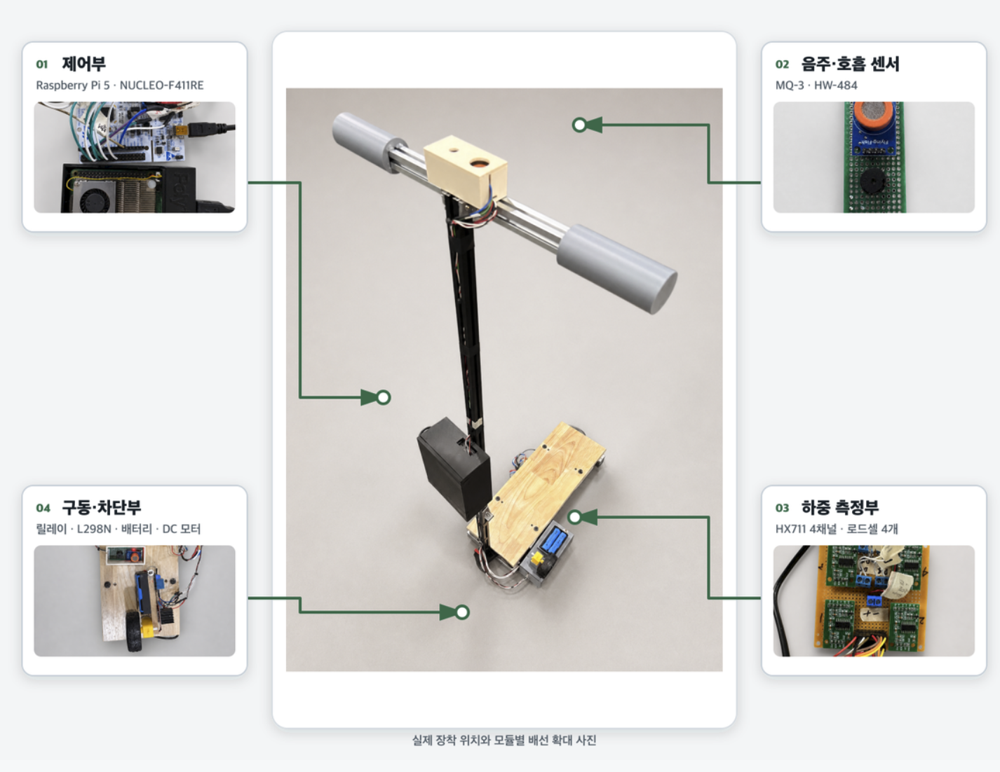

04 / EMBEDDED SAFETY SYSTEMSAFEKICK
출발 조건을 확인하는
세이프킥
인증과 센서 판정을 실제 잠금·구동 제어로 연결한
전동 킥보드 안전 시스템.

나의 구현 영역
MQ-3와 4채널 로드셀을 측정하고 Raspberry Pi에 전달하는 STM32 펌웨어, 릴레이·부저·DC 모터 PWM 제어와 하드웨어 구성을 담당했습니다.
팀 시스템과의 연결
본인·면허, 헬멧, 음주, 탑승 인원 확인을 순차적으로 수행합니다. Pi가 판정하고 MCU가 센서와 출력을 제어하도록 역할을 나눴습니다.
04 / SENSOR & CONTROLSAFEKICK
센서 편차를 보정하고,
상태에 맞게 출력을 제어합니다.
4CH
독립 로드셀 측정
8 + 8
MQ-3 기준 · 실측 표본
200ms
내부 하중 제어 주기
CALIBRATION
로드셀 채널별 편차
무부하 10회 평균으로 tare를 저장하고, 기준 추 측정값으로 각 채널 scale을 다시 계산했습니다. 설치 위치가 달라지면 재보정하도록 구성했습니다.
SAMPLING
MQ-3 측정 안정화
기준값과 실측값을 분리해 각각 500 ms 간격으로 8회 수집합니다. MCU는 ADC 원시값을 보내고 Pi가 변화량과 임계값으로 판단합니다.
INPUTMQ-3 · HX711
→ACQUIRESTM32
↔DECIDERaspberry Pi
→ACTUATE릴레이 · PWM
출력 제어
UNLOCK 직후 PWM은 0%를 유지하고 전방 하중 조건이 충족되면 기동합니다. 이후 목표 출력까지 단계적으로 변경하며, LOCK 명령에서는 PWM 0%·릴레이 OFF를 적용합니다.
수치는 펌웨어 설정값입니다. MQ-3 값은 ADC 원시값이며 혈중알코올농도 측정값이 아닙니다.